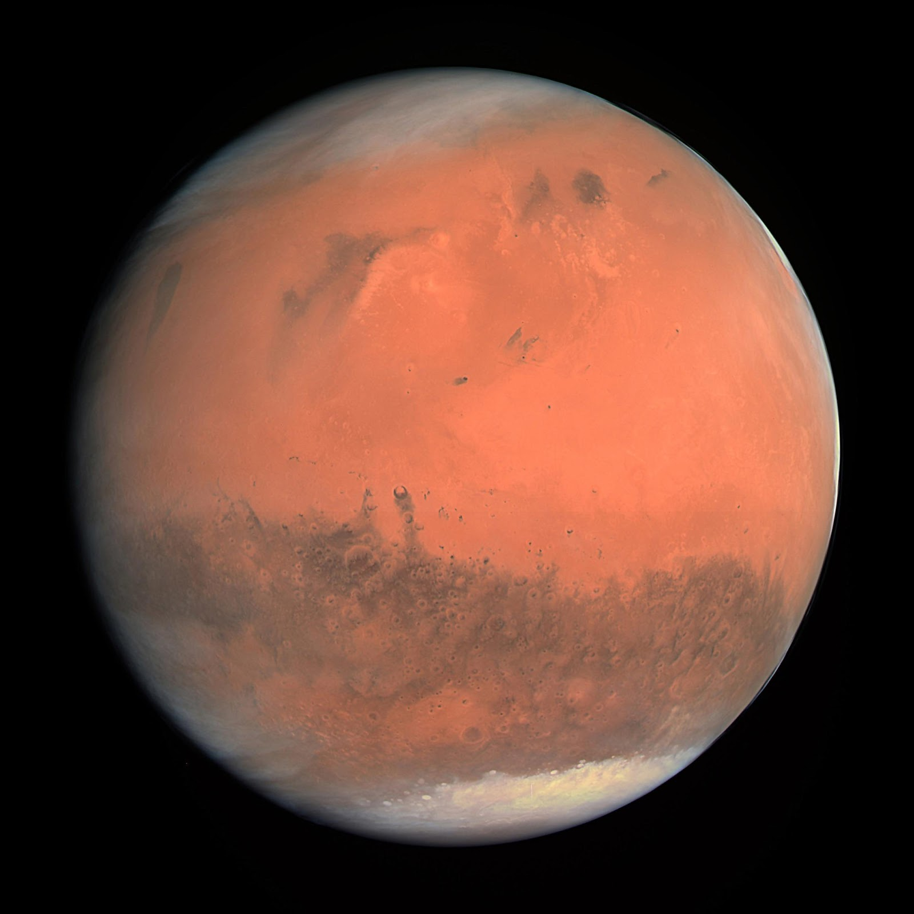

The days and seasons are likewise comparable to those of Earth, because the rotational period as well as the tilt of the rotational axis relative to the ecliptic plane are very similar. Mars is the site of Olympus Mons, the largest volcano and highest known mountain on any planet in the Solar System, and of Valles Marineris, one of the largest canyons in the Solar System. The smooth Borealis basin in the northern hemisphere covers 40% of the planet and may be a giant impact feature. Mars has two moons, Phobos and Deimos, which are small and irregularly shaped. These may be captured asteroids, similar to 5261 Eureka, a Mars trojan.
Mars can easily be seen from Earth with the naked eye, as can its reddish coloring. Its apparent magnitude reaches −2.94, which is surpassed only by Jupiter, Venus, the Moon, and the Sun. Optical ground-based telescopes are typically limited to resolving features about 300 kilometers (190 mi) across when Earth and Mars are closest because of Earth's atmosphere.